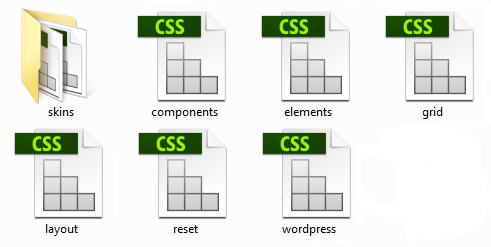

The documentation is written in a way that reflects the way the template was designed and is intended to be edited.
It starts by presenting the grid that is the base of the template, then how to adapt the general page layout and the components that are used to create page content. It finishes by explaining how to change the color scheme.
Template CSS

The template uses 7 main CSS stylesheets:
3rd party scripts / plugins
The template uses a series of 3rd party plugins to add functionality.
You can find all these plugins in the /assets/vendors folder.
The JavaScript files are added at the end of each page, just above the
Template JavaScript
The template uses the jQuery JavaScript framework to interact with the user, control the browser, and alter the document content that is displayed.
There is one custom Js files:
The template includes a responsive, mobile first fluid grid system that appropriately scales up to 12 columns as the device or viewport size increases.
Grid systems are used for creating page layouts through a series of rows and columns that house your content. Here's how the template grid system works:
.container (fixed-width) or .container-fluid (full-width) for proper alignment and padding..row and .span4 are available for quickly making grid layouts.padding. That padding is offset in rows for the first and last column via negative margin on .rows..span4.Use the table below to see how aspects of the grid system work across multiple devices with a handy table.
| Extra small devices Phones (<768px) | Small devices Tablets (≥768px) | Medium devices Desktops (≥992px) | Large devices Desktops (≥1200px) | |
|---|---|---|---|---|
| Grid behavior | Horizontal at all times | Collapsed to start, horizontal above breakpoints | ||
| Container width | None (auto) | 750px | 970px | 1170px |
| # of columns | 12 | |||
| Column width | Auto | ~62px | ~81px | ~97px |
| Gutter width | 30px (15px on each side of a column) | |||
| Nestable | Yes | |||
| Offsets | Yes | |||
We use the following media queries in our grid file to create the key breakpoints in our grid system.
Example: Basic grid
Using a single set of .span* grid classes, you can create a basic grid system that starts out
stacked on mobile devices and tablet devices (the extra small to small range) before becoming horizontal on desktop
(medium) devices. Place grid columns in any .row. Rows must be placed within a .container.
Example: Fluid grid
Turn any fixed-width grid layout into a full-width layout by changing your outermost .container to .container-fluid.
Example: Nesting columns
To nest your content with the default grid, add a new.row and set of .span* columns within an existing
.span* column. Nested rows should include a set of columns that add up to 12 or fewer (it is not required that you use all 12 available columns).
Example: Offsetting columns
Move columns to the right using .offset* classes. These classes increase the left margin of a column by * columns.
For example, .offset4 moves .span4 over four columns.
For faster mobile-friendly development, use these utility classes for showing and hiding content by device via media query.
Try to use these on a limited basis and avoid creating entirely different versions of the same site. Instead, use them to complement each device's presentation.
Use a single or combination of the available classes for toggling content across viewport breakpoints.
| Extra small devices Phones (<768px) | Small devices Tablets (≥768px) | Medium devices Desktops (≥992px) | Large devices Desktops (≥1200px) | |
|---|---|---|---|---|
.visible-phone
|
Visible | Hidden | Hidden | Hidden |
.visible-tablet
|
Hidden | Visible | Hidden | Hidden |
.visible-desktop
|
Hidden | Hidden | Visible | Hidden |
.visible-desktop-large
|
Hidden | Hidden | Hidden | Visible |
.hidden-phone
|
Hidden | Visible | Visible | Visible |
.hidden-tablet
|
Visible | Hidden | Visible | Visible |
.hidden-desktop
|
Visible | Visible | Hidden | Visible |
.hidden-desktop-large
|
Visible | Visible | Visible | Hidden |
As of v5, the .visible-*-* classes for each breakpoint come in three variations, one for each CSS display property value listed below.
| Group of classes | CSS display |
|---|---|
.visible-*-block |
display: block; |
.visible-*-inline |
display: inline; |
.visible-*-inline-block |
display: inline-block; |
So, for phone (phone) screens for example, the available .visible-*-* classes are: .visible-phone-block, .visible-phone-inline, and .visible-phone-inline-block.
Traditional clearing
Clearing CSS floats is just as important to creating CSS structures as anything could be. For years we would clear our floated elements by adding one element with the clear: both; style simple to perform the clear.
This practice was fine but it introduced elements into the page that we really didn't need if there was a better way.
Clearfix
Today there is a better way of clearing content! A clearfix is a way for an element to automatically clear its child elements, so that you don't need to add additional markup. The clearfix is a way to combat the zero-height container problem for floated elements
A clearfix is performed as follows:
The .row class used in the layout already has the clearfix applied so you don't need to add the .fixed class to elements that already have the .row class applied
The template make use of the GOOGLE FONTS service to implement non-standard fonts.
Google Web Fonts is a completely free and super easy way to implement non-standard fonts on your website in a properly licensed and widely supported fashion.
The fonts used are Open Sans and Hind.
You can look it up on the google fonts website using search and then click "Quick-Use" to learn detailed info about how to use it.Quick usage tips
This template uses icon fonts for delivering iconography on the website. The advantage icon fonts have over over image files ( .jpg / .png ) is that they provide scalable vector icons that can instantly be customized — size, color, drop shadow, and anything that can be done with the power of CSS.
The template comes with 2 icon fonts:
Go to the Font awesome website ( http://fortawesome.github.io/Font-Awesome/icons/) and choose a icon and it will take you to a preview page where it provides sample code.
Open the Custom icon font samples and choose a icon you like and copy it's name.
Typography is styled in elements.css
You can find a preview of it and sample code source in Components > Typography
Forms are styled in elements.css
You can find a preview of them and sample code source in Components > Forms
Also there are a lot of helper classes created to help you create pages faster.
| Class | Description | Usage |
|---|---|---|
.hr |
creates a divider | <div class="hr"></div> |
.text-left |
text-align:left | |
.text-center |
text-align:center | |
.text-right |
text-align:right | |
.text-justify |
text-align:justify | |
.text-uppercase |
text-transform:uppercase | |
.text-highlight |
Highlights a section of text | suspendisse <span class="text-highlight">sed diam libero</span> vel |
.mute |
changes color to a muted grey | suspendisse <span class="mute">sed diam libero</span> vel |
.last |
Removes margin bottom when applied to <address>, <p>, <ul>, <ol>, <h1>.. <h6> |
<p class="last"> .... |
.no-margin-bottom |
Removes margin bottom when applied to elements | <p class="no-margin-bottom"> .... |
The template comes with the option to have the header become sticky and follow you when you scroll down the page.
To implement this feature and make it run smoothly we had to position:absolute the header and have a header wrapper div of fixed height around it.
Because of this there are situations where you add a very big logo and it gets cut off partially. To fix this you need to find in layout.css:
and increase the height until it is equal to #header height ( you can measure its height with the Element inspector) or you can
eye ball it and increase the height until the logo seems to fit in fine.
The main menu is created using the Superfish jQuery Menu plugin.
The menu supports a combination of dropdown and megamenu sections.
On devices with a resolution <991px the menu is hidden and a mobile menu appears. The mobile menu is generated from the main menu automatically using JavaScript so you don't need to worry about it. There is a trigger that toggles the mobile menu and it is hidden by default and only shown on resolutions <991px.
On devices with a resolution <991px the menu is hidden and a mobile menu appears.
The mobile menu is generated from the main menu automatically using JavaScript so you don't need to worry about it.
There is a trigger that toggles the mobile menu and it is hidden by default and only shown on resolutions <991px.
The template comes with the option to have the header become sticky and follow you when you scroll down the page.
The sticky menu is control by a class - .sticky-header - applied to the body element
One of my goals when developing a html template is to also make it super easy to convert to WordPress.
For this reason I decide to consider the header and footer sections widgetable areas like WordPress does. I also styled all the default WordPress widgets and created some custom, all while keeping the WordPress code and classes.
Look in Components > Widgets for the list of widgets you can use in these areas.
The template design has some sections that span from one corner to the other and which have custom background colors or images. We call these full width sections.
The full width sections background can be a color, a image ( which can have a parallax effect applied) or a video.
Inside a full width section row and columns are still used to align content to grid.
The template supports 3 types of parallax effects for full width sections with image backgrounds: vertical parallax (standard these days), horizontal parallax and animated horizontal parallax.
Full width with background color
Full width with background color + overlay
Full width with background image
Full width with background image - parallax vertical
Full width with background image - parallax horizontal
Full width with background image - parallax horizontal animated
Full width with video background - local video
Full width with video background - youtube video
Revolution slider has it's own documentation folder.
The template uses bxSlider for general sliders and carousels.
The documentation for the slider can be found here.
To make animations possible we use: CSS 3 animations - http://daneden.github.io/animate.css/. Refer to the scripts website for a complete list of available animation types.
To animate an element on a page just add the .animate class to it.
The animation delay, style, speed etc. can be configured through data attributes:
data-animation - should be one of the animation names from http://daneden.github.io/animate.css/.data-animation-delay - should be a numeric value in milisecondsdata-animation-speed - should be a numeric value in milisecondsThe template uses the Magnific Popup lightbox plugin.
If you want to get a link to open in the lightbox just add the .magnificPopup
class to it for a single image lightbox or .magnificPopup-gallery for a lightbox
in which you can go through the pictures in a gallery fashion.
The filtering on the portfolio is done with Isotope 2.
To add a new filtering options just:
Add class:
.gutter - for space between columns.three-cols - for portfolio with 3 columns.four-cols - for portfolio with 4 columnsMore projects are loaded on page from another page.
data-file - the file from which are loaded the projects via ajaxportfolio_items_loaded - number of projects loaded at one clickTo make the contact script work you just have to go in the send.php
file located in assets/php/ and
change in the line below the email adress with your own.
The way the email works is that the contact.html file calls through ajax the send.php file ( if the inputs are properly filled out) it is processed and the result is returned to the contact.html page and placed in <div id="formstatus"></div>. So you must have it loaded on a server with php enabled to get it to work otherwise it will return the php code.
If the mail is succesfully sent then the contact form is cleared.
gMap is a jQuery plugin that helps you embed Google Maps into your website. With less than 2 KB (minified and gzipped) in size it is very flexible and highly customizable. Read the full gMap 2 documentation.
data-stop - should be a numeric valuedata-speed - should be a numeric value in milisecondsdata-percent - should be a numeric value in percentdata-barColor - should be a color or (HEX or RGBA) or 'transparent'data-trackColor - should be a color (HEX or RGBA) or 'transparent'data-lineWidth - should be a numeric value in pxdata-barSize - should be a numeric value in pxdata-width - should be a numeric value in percent
For an easiest Wordpress converstion, we added widgets, alignments, structure and classes for post and comments.
You can find a preview of it and sample code source in Wordpress > WordPress Post(s), WordPress Comments and WordPress Comment Form
You can find a preview of it and sample code source in Wordpress > WordPress Widgets default
You can find a preview of it and sample code source in Wordpress > WordPress Custom Widgets
You can find a preview of it and sample code source in Wordpress > WordPress Custom Widgets
The template uses Twitter Post Fetcher - to display tweets without using the 1.1 twitter API.
Twitter Post Fetcher Makes use of the over bloated widgets Twitter gives us to put on our sites, cuts out all the nonsense (and non semantic markup), and returns to you your raw tweet text so you can do with it as you please and style it how you want on your own website.
How to use it:
Flickr photos are added through a flickr badge. You can generate one on the flickr website or just change the photo set used by the current one.
To make it easier to skin the template we included skin css files with the templates. These files contain all the css
rules related strictly to colors and background colors and images. They can be found in the /_layout/css/skins folder.
The Template template has a default skin - default.css. To create new ones just rename this file and change color values in it and
then link to it in the html pages just under the Template CSS stylesheets. It also comes with 1 other predefined color schemes:
In order to understand the html and css in the template you must be familiar with the following concepts:
Firebug integrates with Firefox to put a wealth of web development tools at your fingertips while you browse. You can edit, debug, and monitor CSS, HTML, and JavaScript live in any web page.
If you are using Firefox, Firebug should prove to be a great asset while editing the template, as you could use if to select elements on the page, find out what css they use and do changes on the fly to see how they would look. Also you could use the console to see eventual errors.
For more info on Firebug and it's usage visit https://getfirebug.com/.
Often problems with the templates are due to coding errors made while edting them. So I highly recommend you run your html files through the W3C Markup Validation Service and your CSS files through the W3C CSS Validation Service once you are done editing them.
The tool I use for page speed optimisation is Google's Page Speed Insights.
Run your website through it and it will pinpoint problems and suggest fixes.
If you need to compress images try the Windows and Mac OS application PNG Gauntlet.
If you need help with Search Engine Optimization I recommend you:
The list of credits can be found in the Licenses folder.